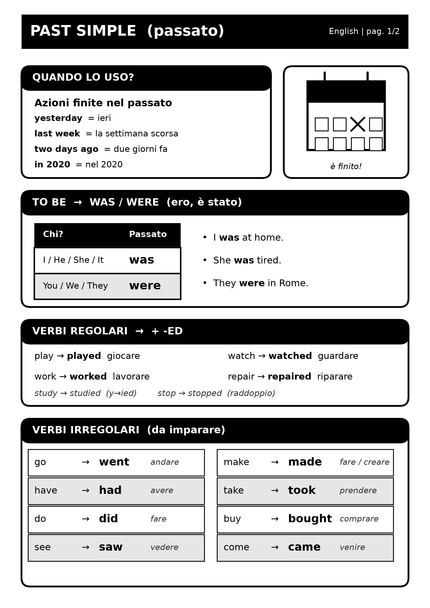
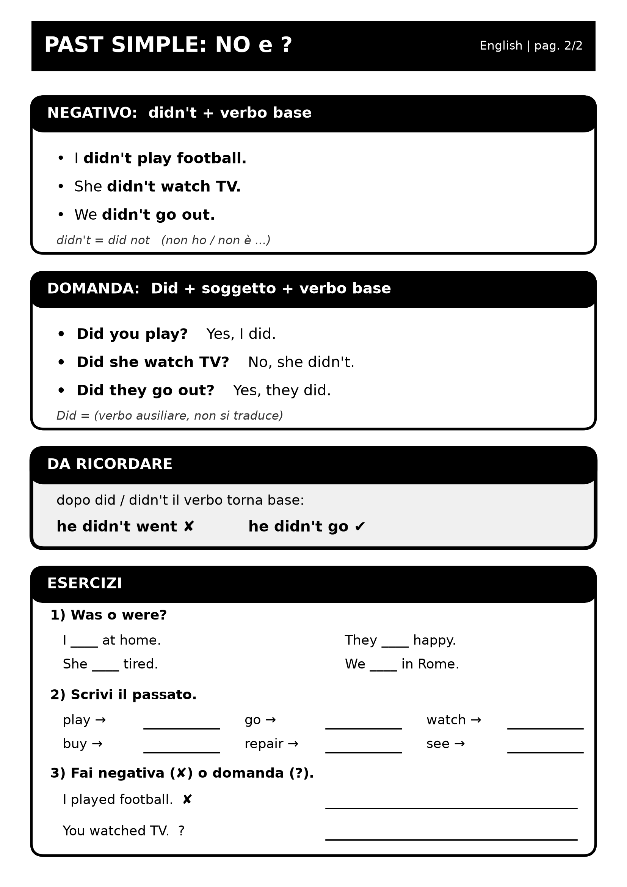

Salta al contenuto
Oggi · Ieri
YESTERDAY
Studio · il cartellino delle regole
Ieri: il past simple
In italiano: «ho riparato», «ero», «sono andato». In inglese basta un solo tempo: il past simple.
1Quando lo uso
Il past simple parla di azioni finite nel passato. Sono iniziate e finite. Di solito c’è una parola del tempo.
OGGI · present simple
NOW
si ripete adesso
I repair motorbikes every day.
Riparo moto ogni giorno.
IERI · past simple
NOW
è finita
Yesterday I repaired a motorbike.
Ieri ho riparato una moto.
Parole del tempo: yesterday · last week · two days ago · in 2020.
2was / were
Il verbo to be (essere) ha due forme al passato.
- I was at home yesterday. Ieri ero a casa.
- She was tired. Era stanca.
- They were in Rome last week. Erano a Roma la settimana scorsa.
Negativa e domanda
wasn’t / weren’t · Was he tired? · Were you at home?
Con be non serve did.
3Verbi regolari: + -ed
Quasi tutti i verbi fanno il passato con -ed. Vale per tutte le persone: niente -s.
Come si forma
play → played · watch → watched · work → worked · repair → repaired
I played · he played · they played
4Verbi irregolari
Alcuni verbi cambiano forma. Non hanno regola: si imparano. Sono pochi e comuni.
- I went to the market. Sono andato al mercato.
- I bought a new helmet. Ho comprato un casco nuovo.
- He took a photo. Ha fatto una foto.
5La negativa: didn’t
didn’t + verbo base
I didn’t play football. · She didn’t watch TV. · We didn’t go out.
didn’t = did not. Vale per tutti: I, you, he, she, it, we, they.
Attenzione
Dopo didn’t il verbo torna base. Il passato è già dentro did.
He didn’t went → He didn’t go.
I didn’t played → I didn’t play.
6Le domande: Did…?
Did + soggetto + verbo base
Did you play football? · Did she watch TV? · Did they go out?
Risposte brevi: Yes, I did. / No, I didn’t. · Yes, she did. / No, she didn’t.
Domanda con una parola in più:
- What did you do yesterday? Cosa hai fatto ieri?
- Where did you go? Dove sei andato?
Con be si gira: Were you at home? (senza Did).
7Parole del tempo
Queste parole ti dicono: «usa il past simple».
yesterdayyesterday morninglast nightlast weeklast Saturdaylast yeartwo days agoa week agoin 2020
Dove vanno? Di solito alla fine della frase: I repaired a motorbike yesterday. Oppure all’inizio: Yesterday I repaired a motorbike.
ago = fa, si mette dopo: two days ago = due giorni fa.
8Errori tipici
9In breve
La versione corta. Due righe, tre regole.
🔁OGGII repair. He repairs.
ogni giorno · di solito
⏪IERII repaired. He repaired.
ieri · la settimana scorsa · due giorni fa
- regolari: + ed → worked · irregolari: da imparare → went
- negativa e domanda: didn’t / Did + verbo base → I didn’t go
- be: was / were
10Scheda da stampare
Due pagine in bianco e nero, da stampare fronte-retro. C’è anche la pagina con le soluzioni.


11Ricorda così
- Ieri / la settimana scorsa / … fa → past simple.
- Regolari: + ed (worked). Irregolari: go → went.
- was / were per il verbo essere.
- didn’t e Did + verbo base: I didn’t go, Did you go?
- Nessuna -s al passato: he played.